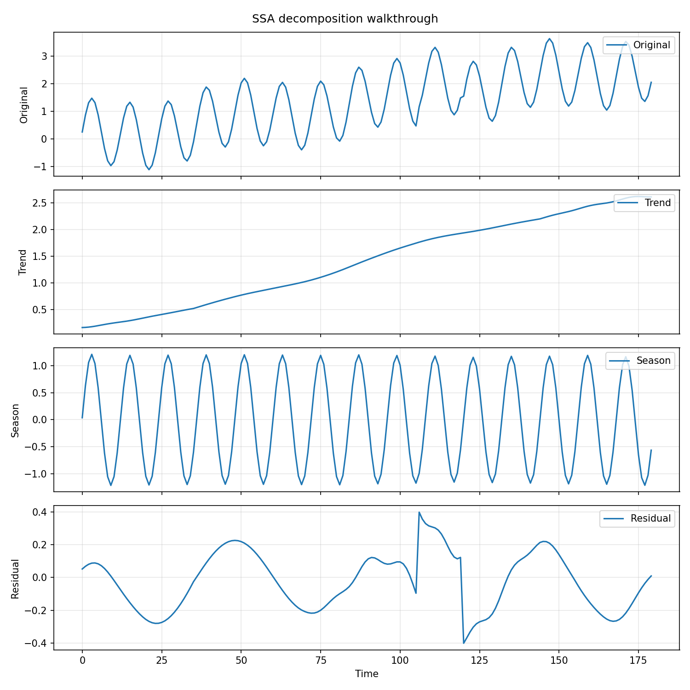
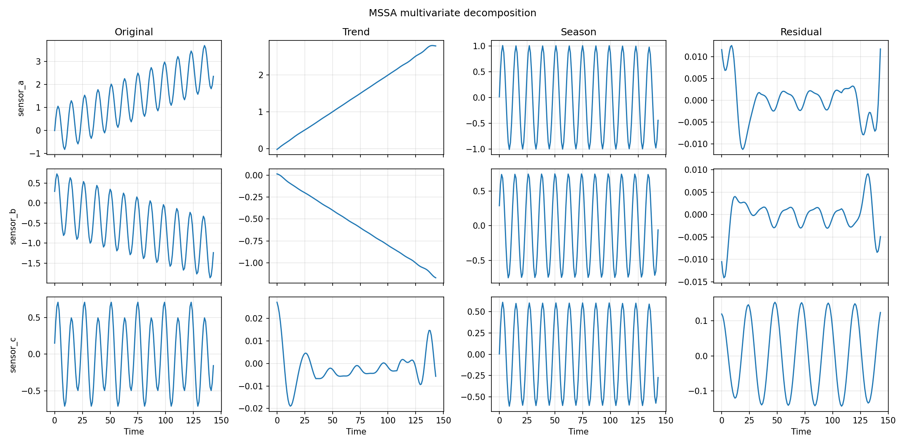

De-Time
De-Time is workflow-oriented research software for reproducible time-series decomposition. It gives you one public package, one decomposition contract, and one docs surface across univariate, multivariate, native-backed, and machine-facing workflows.
What it is
- A canonical Python package with import path
detime. - A stable
decompose()entrypoint plusDecompositionConfigandDecompResult. - A documentation set centered on practical workflows rather than benchmark scoreboards.
- A package whose flagship methods are
SSA,STD,STDR, andMSSA. - A machine-facing surface with schemas, recommendations, and a minimal MCP server.
What it is not
- Not a new decomposition algorithm.
- Not a benchmark-paper artifact disguised as a library.
- Not a replacement for every specialized upstream implementation.
- Not a promise that every wrapper has the same maturity as the flagship path.
Start here
- Install for package installation and extras.
- Quickstart for the first successful Python and CLI runs.
- Choose a Method for picking a starting workflow.
- ML Workflows for the package's machine-learning-facing use cases.
- Methods for method family details.
- Method Cards for per-method assumptions and failure modes.
- Machine API for schemas, catalog, recommendation, and MCP use.
- Comparison Evidence for reviewer-grade matrices.
- Token Benchmarks for bounded-context payload costs.
- Migration from
tsdecompif you are upgrading existing code.
Package boundary
This repository ships the software package itself. Companion benchmark
artifacts live in the separate
systems-mechanobiology/de-time-bench
repository. The main package no longer exposes benchmark orchestration,
leaderboard helpers, or benchmark-derived methods.
The legacy tsdecomp import and CLI still resolve to De-Time, but only as a
deprecated compatibility alias through 0.1.x.
Visual reference

